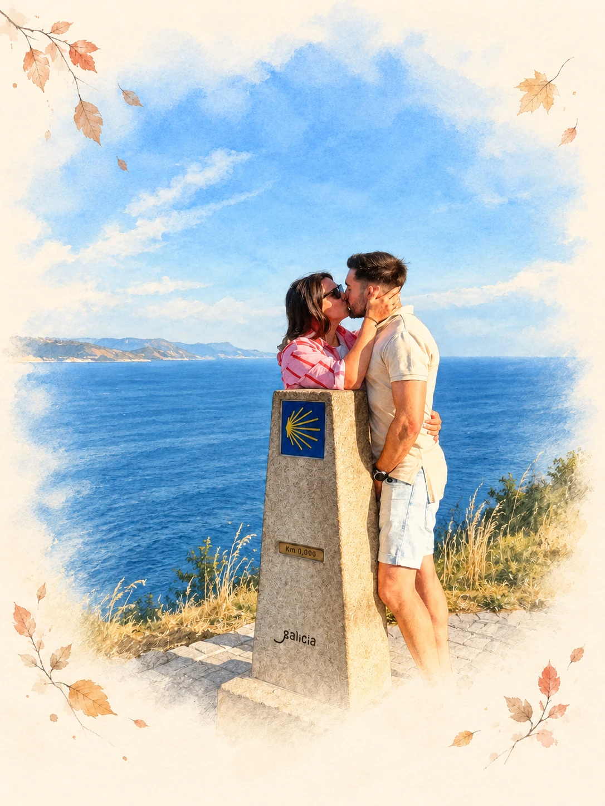

Laura & Darío
¡Nos casamos!
Os esperamos a las en el Eurostars Monasterio de San Clodio (Leiro, Ourense) para comer, beber, bailar y disfrutar todos juntos.
Rogamos confirmar asistencia.
Un sí en Galicia · 2 de octubre de 2027
Pulsa el sello para abrir
Nos vemos muy prontoGalicia, donde empieza nuestro siempre
Leiro, Ourense

La cuenta atrás para nuestro sí
Nuestra historia
¿Quién nos iba a decir que, muchos años después, una pandemia volvería a cruzar nuestros caminos? A veces el destino tiene sus propios planes, y el nuestro no podía ser más bonito.
Estamos infinitamente felices de poder dar este paso y, sobre todo, de celebrarlo con las personas que hacen nuestra vida más especial: vosotros.
Con muchísima ilusión,
Laura y Darío

Un detalle, solo si os apetece
Lo importante es que vengáis con ilusión, alegría y ganas de pasarlo bien.
Pero si queréis hacernos un regalo, aquí tenéis nuestro número de cuenta.
ES09 0182 53XX XXXX XXXX 7876
Muchas gracias
Para disfrutar de Ourense
Os dejamos algunas opciones para alojaros en Ourense y disfrutar de estos días juntos.


Sabores de Galicia
Si tenéis tiempo porque venís unos cuantos días y os apetece probar la gastronomía gallega, os dejamos por aquí algunas recomendaciones, aunque lo mejor es perderse por la famosa Calle de los Vinos (en el Casco Histórico), donde encontraréis muchas opciones.
Mejor hamburguesa de España 2026.
Junto al Teatro Principal de Ourense. Su especialidad es la oreja.
Marisquería para disfrutar del producto gallego.
Una buena opción para ir de tapeo.
Reconocido por la Guía Michelin por su cocina gallega creativa.
Nos encantará saber de vosotros
Para ayudarnos a preparar cada detalle, cuéntanos quiénes nos acompañaréis.